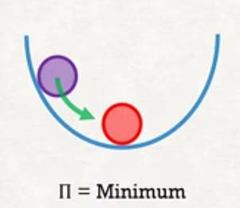
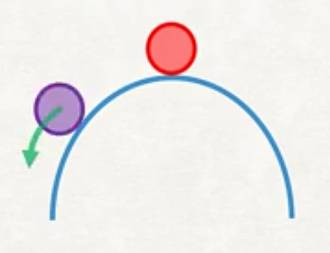
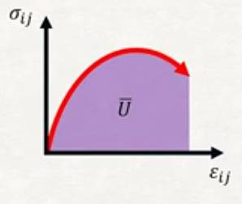
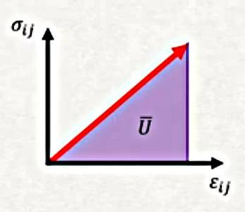

Materyel Mekaniği - 4
Yapıların stres, kaykılma fiziğini kullanarak Euler-Bernoulli kirişlerinden bahsedildi, ve bir diferansiyel denklem elde edildi. Bu denklem kesin (exact) olarak çözülebilir fakat bazı durumlarda çözümü zor olabilir. Kesin metotlar yerine yaklaşık metotlara bakmak faydalı olacaktır.
Rayleigh-Ritz metotu diferansiyel denklemleri yaklaşıksal olarak çözmenin bir yöntemidir. Metot bunu sistemin potansiyel enerjisi $\Pi$'yi minimize ederek yapar [1, Ders 3]. Potansiyel enerji sistemin toplam iç gerilme enerjisi eksi sistem üzerinden yapılan iş olarak hesaplanabilir,
$$ \Pi = \int_\Omega \overline{U} \mathrm{d} x - W $$
Bu noktada aklımıza pek çok soru gelebilir - niye potansiyel enerji minimize ediyoruz, iş gerilme enerjisi ve yapılan iş nasıl hesaplanır, potansiyel enerji nasıl minimize edilir gibi..
Potansiyel Enerji ve Denge
İlk önce denge bağlamında potansiyel enerjinin ne demek olduğunu işleyelim.
Potansiyel enerji $\Pi$ sistemin stabilitesi ile alakalıdır. Mesela alttaki resim stabilite konusunu işleyen her ders kitabında vardır, bir kapta duran topu aldım, yukarı doğru çıkatıp (bordo renk) aşağı bıraktım, top kabın dibine gidip orada kalacaktır (kırmızı renk).

Yani top ilk denge konumuna dönecektir, ve o durumda potansiyel enerjisi minimum olmuştur deriz ve bu denge stabil bir dengedir.

İkinci durumda topu orta noktada sola taşırız, top orada kalır, bu yeni bir denge noktasıdır, $\Pi$ değişmemiştir, burada nötr bir denge vardır.

Üçüncü durumda ters kavisli bir yüzey var, top üst orta noktadan başlıyor diyelim (orada durması zor olsa da), topu yine alıp sola taşıyorum, top aşağı düşecektir. Üstteki durum potansiyel enerjisinin maksimum olduğu bir durumdur, sistem stabil değildir. Rayleigh-Ritz yönteminin amacı (potansiyel enerjinin minimum olduğu) stabil denge durumunu hedefleyerek bir yaklaşık çözüme ulaşmaktır.
Bunu nasıl yaparız? Daha önce belirttiğimiz potansiyel enerjinin iki bileşeni var, ilki sistemin toplam iç gerilim (deformasyon) enerjisi. Gerilim enerji yoğunluğu $\overline{U}$ genel olarak bir materyelin stres-gerilim eğrisinin altındaki alan olarak hesaplanabilir.

Mesela üstteki gibi stres $\sigma_{ij}$ ve gerilim $\epsilon_{ij}$ arasındaki bir eğriyi düşünelim, bu eğrinin altında kalan alan, yani entegral hesabı gerilim enerji yoğunluğunu verir.
$$ \overline{U} = \int_{0}^{\epsilon_{ij}} \sigma_{ij} \mathrm{d} \epsilon_{ij} $$
Kolaylaştırıcı bir faktör, bizim bu derste kullanacağımız maddeler lineer elastik, yani stres-gerilim eğrisi alttaki gibi,

Bu durumda "eğri" yani çizgi altındaki alan basit bir üçgen hesabı,
$$ \overline{U} = \frac{1}{2} \sigma_{ij} \epsilon_{ij} $$
Fakat bu sadece tek bir boyutu halletti, mesela üstteki örnek $e_1$ yönündeki bir esnemeyi temsil ediyor olabilirdi, fakat 3 boyutlu ortamda elimizde daha fazla bileşen olduğunu biliyoruz, $\sigma_{11}$ haricinde $\sigma_{22}$ var, $\sigma_{33}$ var, $\sigma_{12}$, $\sigma_{23}$, vs.. Tüm stres/gerilim eşleri için [2, Ders 16],
$$ \overline{U} = \frac{1}{2} \sum_{i,j=1}^{3} \sigma_{ij} \epsilon_{ij} $$
Toplamı açarsak,
$$ = \frac{1}{2} (\sigma_{11}\epsilon_{11} + \sigma_{22}\epsilon_{22} + \sigma_{33}\epsilon_{33} + \sigma_{12}\epsilon_{12} + \sigma_{23}\epsilon_{23} + \sigma_{13}\epsilon_{13} + \sigma_{33}\epsilon_{33} + \sigma_{23}\epsilon_{23} + \sigma_{32}\epsilon_{32} ) $$
Son ifadeyi daha basitleştirmek mümkün, $\sigma$ ve $\epsilon$'un simetrik olduğunu unutmayalım,
$$ \overline{U} = \frac{1}{2} (\sigma_{11}\epsilon_{11} + \sigma_{22}\epsilon_{22} + \sigma_{33}\epsilon_{33} + 2 \sigma_{12}\epsilon_{12} + 2 \sigma_{13}\epsilon_{13} + 2 \sigma_{23}\epsilon_{23} ) $$
Üsttekileri mühendislik gerilimi $\gamma_{ij} = 2 \epsilon_{ij}$ ile temsil etmek mümkün,
$$ \overline{U} = \frac{1}{2} (\sigma_{11}\epsilon_{11} + \sigma_{22}\epsilon_{22} + \sigma_{33}\epsilon_{33} + \sigma_{12}\gamma_{12} + \sigma_{13}\gamma_{13} + \sigma_{23}\gamma_{23} ) $$
[atlandı]
Eksenel Yükleme (Axial Loading)
Euler-Bernoulli kiriş formülasyonu sadece bükülmenin sebep olduğu deformasyonu hesaba kattı, bunu yaparken nötr eksen üzerindeki eksenel deformasyonu yok saydı [3]. Euler-Bernoulli modelini eksenel yatay deformasyonu hesaba katacak şekilde genişletmek mümkündür, fakat, belki de bu iyi haber, ufak deformasyon önkabulü sayesinde eksenel yük ve bükülme deformasyonları birbirinden bağlantısız (uncoupled) hale gelir, eksenel yük sadece eksenel deformasyonu, yatay yük sadece yatay deformasyonu etkiler.

Diğer faraziyeler Euler-Bernoulli modeline benzer, Düzlem bölümler düzlem kalır, Poisson oranı etkileri yoksayılır, ve yatay yer değişimi $u_1$ pürüzsüz bir fonksiyondur.
Bu faraziyelerle modeli oluşturalım; üstteki resme bakarsak $u_1 = u_1(X_1)$, ve pozisyon vektör fonksiyonu olarak,
$$ x = \left[\begin{array}{c} X_1 + u_1 \\ X_2 \\ X_3 \end{array}\right] $$
Bu durumda yer değişim fonksiyonu
$$ u = x - X = \left[\begin{array}{c} u_1 \\ 0 \\ 0 \end{array}\right] $$
Hatırlarsak yaklaşık olarak gerilim tensörü
$$ \epsilon = \frac{1}{2} (\nabla u + \nabla u^T ) $$
Gradyanlar ile hesabı yaparsak sadece $\epsilon_{11}$'in sıfır olmadığını görüyoruz,
$$ \epsilon = \left[\begin{array}{ccc} \frac{\mathrm{d} u_1}{\mathrm{d} X_1} & 0 & 0 \\ 0 & 0 & 0 \\ 0 & 0 & 0 \end{array}\right] $$
[devam edecek]
Kaynaklar
[1] Petitt, Intro to the Finite Element Method, University of Alberta, https://www.youtube.com/watch?v=2iUnfPRk6Ro&list=PLLSzlda_AXa3yQEJAb5JcmsVDy9i9K_fi
[2] Petitt, Intro to the Continuum Mechanics, University of Alberta, https://www.youtube.com/playlist?list=PLLSzlda_AXa3N5jaDART7kimBlYz1dFnX
[3] Adeeb, Introduction to Solid Mechanics, Beams under Axial Loading https://engcourses-uofa.ca/books/introduction-to-solid-mechanics/